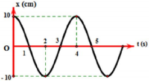

PHẦN I. Câu trắc nghiệm nhiều phương án lựa chọn
Mỗi câu có 4 phương án, chỉ chọn một đáp án đúng (0,25 điểm).
1
Một vật dao động điều hòa có phương trình $x=5\cos(2\pi t-\pi/6)$ cm. Lấy $\pi^{2}=10$. Gia tốc của vật khi có li độ $x = 3$ cm là
2
Một chất điểm dao động điều hòa với phương trình $x=20\cos(2\pi t)$ cm. Gia tốc của chất điểm tại li độ $x = 10$ cm là
3
Một con lắc lò xo gồm lò xo có độ cứng 20 N/m và viên bi có khối lượng 0,2 kg dao động điều hòa. Tại thời điểm t, vận tốc và gia tốc của viên bi lần lượt là 20 cm/s và $2\sqrt{3}$ m/s2. Biên độ dao động của viên bi là
4
Một vật dao động điều hòa có chu kì 2 s, biên độ 10 cm. Khi vật cách vị trí cân bằng 6 cm, tốc độ của nó bằng
5
Một vật dao động điều hòa phải mất 0,25 s để đi từ điểm có vận tốc bằng không tới điểm tiếp theo cũng như vậy. Khoảng cách giữa hai điểm đó là 36 cm. Chu kì và biên độ của vật là
6
Một chất điểm chuyển động tròn đều trên đường tròn tâm O bán kính 10 cm với tốc độ góc 5 rad/s. Hình chiếu của chất điểm trên trục Ox nằm trong mặt phẳng quỹ đạo có tốc độ cực đại là
7
Trong dao động điều hòa, khi gia tốc của vật đang có giá trị âm và độ lớn đang tăng thì
8
Đồ thị dưới đây biểu diễn $x = A\cos(\omega t + \phi)$. Tốc độ cực đại của vật là

9
Một vật dao động điều hòa với phương trình $x=6\cos(2\pi t+\frac{\pi}{6})$ (cm). Tại thời điểm 3,5 s, vận tốc và gia tốc của vật có giá trị lần lượt là
10
Một vật dao động theo phương trình $x=6\cos(2\pi t-\frac{\pi}{6})$ (cm). Tại thời điểm $t = 2{,}5$ s, vật đi qua vị trí có
11

Một chất điểm dao động điều hòa trên trục Ox có đồ thị biểu diễn vận tốc $v$ theo li độ $x$ và đồ thị vận tốc theo thời gian như hình vẽ. Tại thời điểm $\tau$, chất điểm qua vị trí có gia tốc có giá trị gần nhất với giá trị nào sau đây?
12
Một chất điểm dao động điều hòa trên trục Ox, khi chất điểm đi qua vị trí cân bằng thì tốc độ của nó là 20 cm/s. Khi chất điểm đi qua vị trí gia tốc có độ lớn $40\sqrt{3}$ cm/s2 thì tốc độ của nó là 10 cm/s. Biên độ dao động của chất điểm bằng
13
Một chất điểm dao động điều hòa trên trục Ox, với gia tốc cực đại là 320 cm/s2. Khi chất điểm đi qua vị trí gia tốc có độ lớn 160 cm/s2 thì tốc độ của nó là $40\sqrt{3}$cm/s. Biên độ dao động của chất điểm là